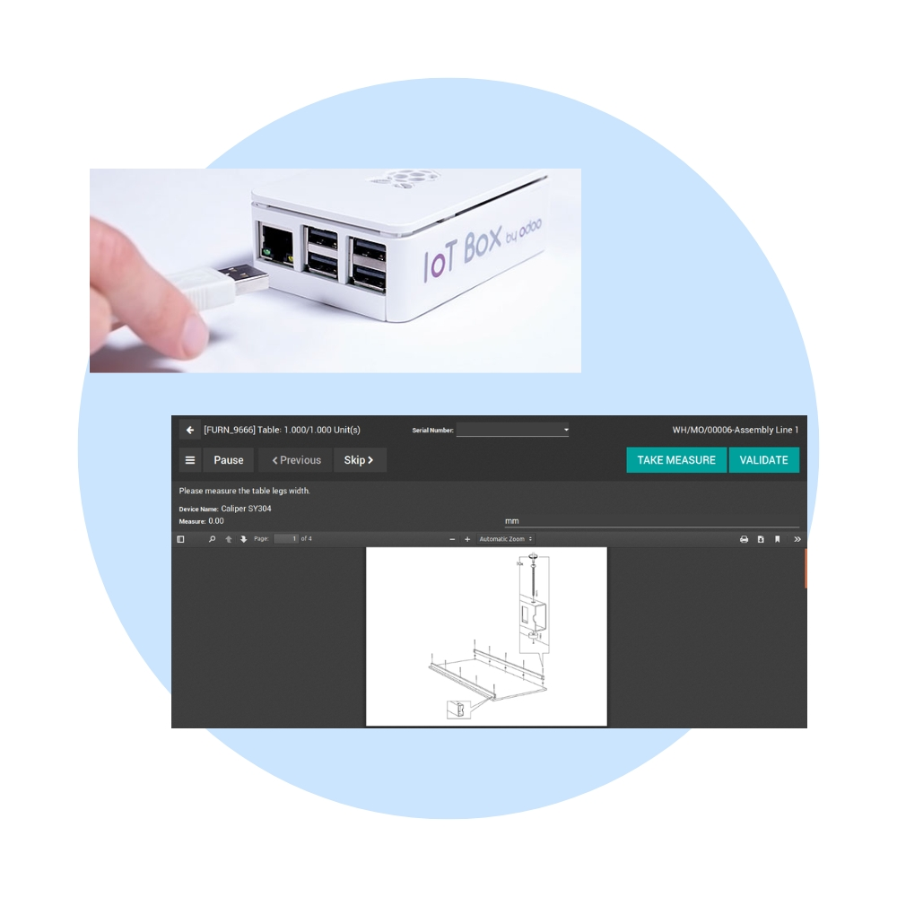
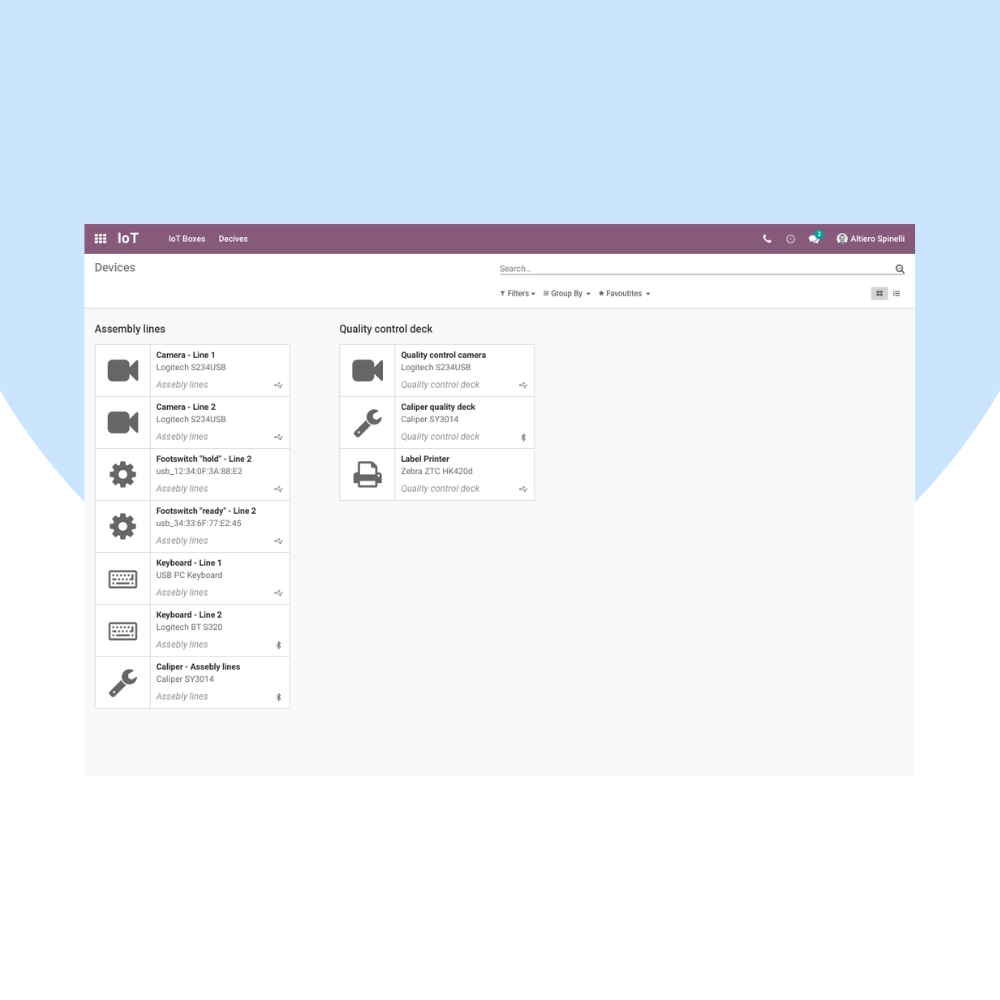
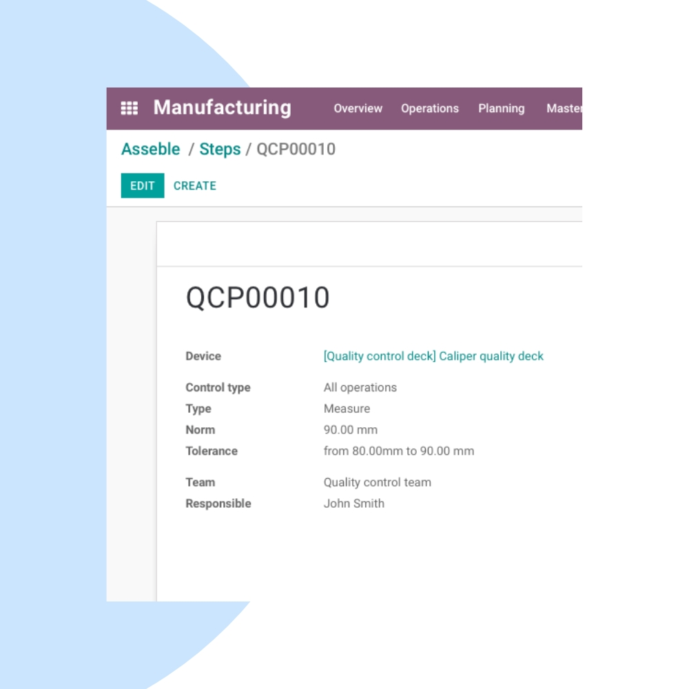

Bridge the gap between hardware and ERP with Odoo IoT. We help businesses connect IoT devices, automate physical operations, and enable real-time data flow directly into Odoo.
We configure Odoo IoT to connect with printers, barcode scanners, weighing scales, PLCs, sensors, and other smart devices. Integrate IoT seamlessly with Manufacturing, POS, Inventory, Quality, and Maintenance.


Our implementation ensures stable device connectivity, real-time data capture, and automation of physical operations across your business.
Connect devices easily using Odoo IoT Box.
Capture live data from connected devices.
Trigger actions based on device events.
Printers, scanners, sensors & PLCs.
Manufacturing, POS, Quality & Maintenance.
Fully integrated with Odoo applications.
We help you optimize device performance, improve automation reliability, and scale IoT usage as your operations grow.
